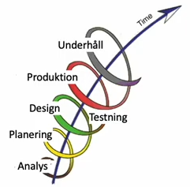

A.
User needs är vad användarna förväntar sig av en hemsida. Vad har de för krav, önskemål och behov med mera? Att ta reda på användarnas behov är en grundpelare i att skapa en bra webbplats. En webbplats skapas generellt med målet att användarna ska få en så bra upplevelse som möjligt och för att kunna göra det så måste man, genom en målgruppsanalys, ta reda på vad användarna har behov av. Detta är grundpelare i användarcentrerad design.
B.
När man formulerar ett krav så är det viktigt att det går att ta på kravet. Det ska med andra ord vara konkret, mätbart och objektivt. Hur gör man det då? Det gör man genom att använda termer som är specifika och objektiva och som går att mäta. Här kan det vara bra att använda sig av siffror eller enheter då de ofta tillåter mätbarhet.
C.
På varje produktsida ska det finnas en bild på produkten, priset på produkten och en beskrivning av produkten som är mellan 50-150 ord.
Detta krav är enkelt mätbart. Vi får reda på att dessa krav gäller på varje produktsida, att det ska finnas en bild på produkten och en beskrivning på mellan 50-150 ord. Alla dessa krav går att ta på och när produktsidorna är klara så går det snabbt och enkelt att se om dessa krav uppfylls eller inte.